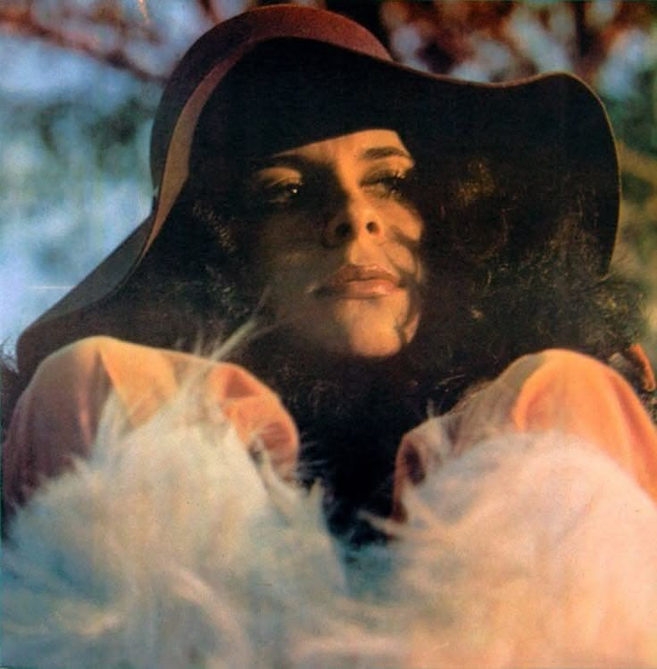
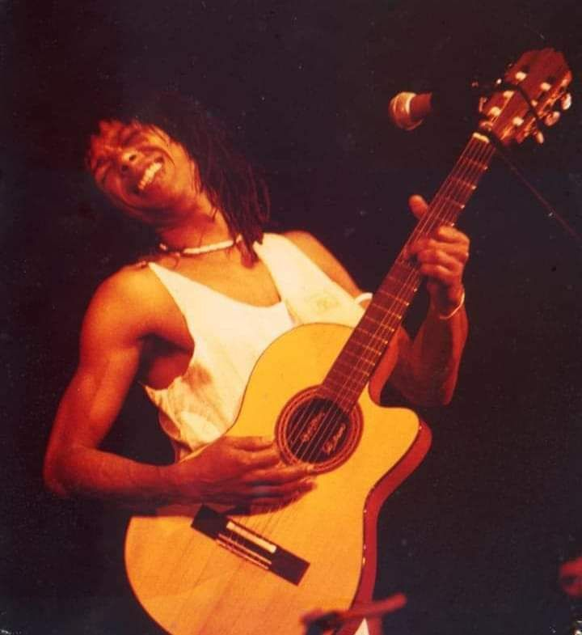
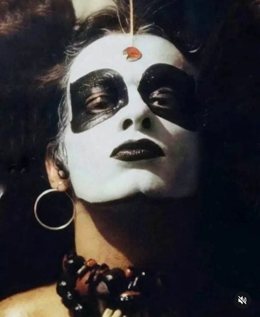

Nossos cantores favoritos de MPB𓍢ִ໋

Rita Lee
Com 60 anos de carreira, Rita Lee conquistou seu espaço em diversos gêneros musicais, indo do rock
à bossa nova através de sua forma única de cantar e de se expressar.
Uma das mais influentes mulheres brasileiras, a cantora sempre fez questão de lutar pelos direitos das
mulheres e foi a primeira artista
feminina a tocar guitarra em seus shows, um instrumento tachado como masculino.
Figura icônica nos anos 60, 70 e 80, auges do seu sucesso, Rita Lee foi extremamente importante nas
inovações musicais que surgiram em todas essas décadas
e foi uma grande referência por ter conseguido se reinventar inúmeras vezes na indústria da música.
A morte de Rita Lee, que foi vítima das complicações de um câncer de pulmão, deixou em luto gerações de admiradores de seu talento,
carisma e espontaneidade.
Recorde de uma das cantoras mais revolucionárias do mundo!

Gal costa
Maria da Graça Costa Penna Burgos, popularmente conhecida como Gal Costa, nasceu em Salvador,
no dia 26 de setembro de 1945.
Ela foi uma cantora baiana que é considerada um dos grandes ícones da música popular brasileira.
Lançou dezenas de discos de sucesso e gravou canções que marcaram gerações.
Iniciou sua carreira na década de 1960. Na década seguinte, tornou-se uma das grandes representantes do tropicalismo
e foi considerada também uma musa hippie.
Ao longo da década de 1970, Gal Costa tornou-se a tropicalista de maior relevância no país porque Caetano Veloso e Gilberto Gil se exilaram devido à Ditadura Militar.
Nesse período gravou sucessos como “Índia”, “Barato total”, “Flor de maracujá”, “Desafinado”, “Pérola negra”, entre outras.
Foi considerada musa dos hippies, mas, ao final dessa década, seu estilo musical se modificou, aproximando-se do pop.
Em 9 de novembro de 2022, Gal Costa faleceu em São Paulo. Ela se recuperava de uma cirurgia para retirada de um nódulo na fossa nasal direita.
Segundo a assessoria da cantora, a causa da morte foi um infarto.
A Gal, para nós, é além de só uma cantora, ela é um ícone, uma mulher bela e admirável nos inspira muito!

Djavan
Djavan é conhecido por seu jeito único de cantar e de compor.
Autor de músicas com letras poéticas e melodias complexas, ele afirma que fazer música é um trabalho duro, muito mais difícil do que parece.
Ao longo de sua carreira musical já lançou mais de 20 álbuns e é dono de inúmeros sucessos, que mesmo depois de décadas continuam agradando pessoas de todas as idades.

Ney matogrosso
Filho de militar, foi criado em um ambiente disciplinado e tradicional, tendo vivido uma infância marcada pela rigidez e pela constante mudança de cidades.
Desde pequeno, ele já demonstrava interesse pelas artes: cantava, desenhava e se interessava pela interpretação.
Ele deu vazão a essa vocação aos 18 anos, quando decidiu sair de casa após assumir sua homossexualidade.
Seu reconhecimento como artista solo veio em 1976, com o álbum Bandido, que trouxe Bandido Corazón, composta por Rita Lee especialmente para Ney,
e consolidou Ney Matogrosso como um artista transgressor, em sintonia com a Tropicália e o glam rock.
Mais do que um grande cantor, Ney Matogrosso abriu portas para a liberdade artística e comportamental no Brasil,
tornando-se um símbolo atemporal de coragem e autenticidade.
Marisa Monte
Marisa Monte é uma das artistas mais completas, elegantes e influentes da música brasileira contemporânea,
sendo fundamental para a modernização e renovação da MPB a partir do final dos anos 1980.
Ela já fez parte do trio Tribalistas ao lado de Arnaldo Antunes e Carlinhos Brown.
Em 1991, Marisa lançou o disco Mais, que contou com parcerias de outros artistas como Nando Reis (Ainda Lembro) e Arto
Lindsay (Beija Eu) que foi classificada como uma das melhores canções pop brasileiras.
Jorge Ben Jor
Jorge Ben é uma figura icônica da música brasileira, cuja carreira abrange várias décadas e gêneros musicais.
Sua versatilidade é notável em seu estilo característico, que incorpora uma mistura única de rock and roll, samba, samba
rock, bossa nova, jazz, maracatu, funk, ska e até mesmo hip hop.
Suas composições trazem letras que combinam humor, sátira
e temas esotéricos, estabelecendo um estilo único e inovador.
Com sua criatividade, originalidade e habilidade musical incomparável, Jorge Ben deixou uma marca inesquecível na história
da música brasileira e continua a inspirar artistas e amantes da música em todo o mundo.